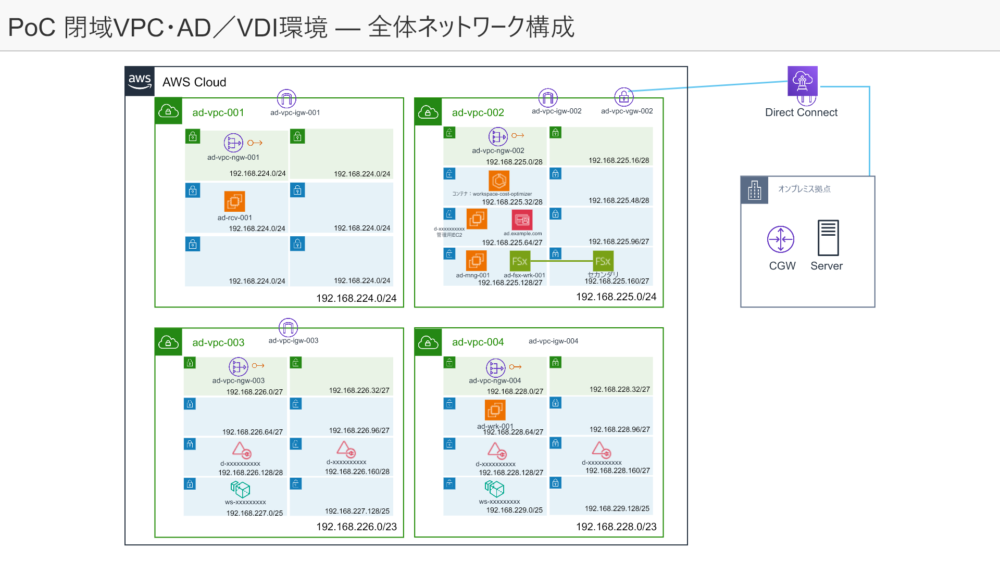

Amazon WorkSpaces 技術移管
AWS Managed Microsoft AD、AD Connector、Amazon WorkSpaces、OU・GPO、カスタムイメージ、Systems Manager、Cost Optimizerを依存関係に沿って再構築する
実機検証で確認した設定値、工程ゲート、証跡画像および運用上の判断基準をまとめる

AWS基盤・Amazon WorkSpaces 構築・運用作業順序
1. この文書の目的
本書は、AWS Managed Microsoft ADの作成からAmazon WorkSpacesの利用開始、カスタムイメージ／バンドル作成および別AWSアカウントへの共有・展開までを、依存関係に沿って実施するための全体索引です。各画面の操作はリンク先の個別手順書を使用し、この文書では「何を先に終わらせるか」と「次へ進める条件」を確認する
2. 推奨する全体順序
| 順序 | 作業 | 次へ進む条件 | 使用する手順書 |
|---|---|---|---|
| 0 | VPC・サブネット・CIDR・DNS・IAM・接続方式を設計する | CIDRが重複せず、Managed AD用とAD Connector／WorkSpaces用の各2サブネット、VPCピアリング、往復ルートおよび必要通信の設計が確定している | 構成資料・パラメータシート |
| 1 | AWS Managed Microsoft ADを作成する | ディレクトリが「アクティブ」で、DNS IP、VPC、2サブネットおよびDirectory IDを確認できる | AWS Managed Microsoft AD構築手順 |
| 2 | ディレクトリ管理用EC2を起動して接続する | EC2が実行中、ステータスチェック合格、ドメイン参加済みで、ADUCとGPMCを使用できる | 管理用EC2起動・接続・AD管理開始手順 |
| 3 | ADの初期オブジェクトと権限を準備する | WorkSpaces利用ユーザー、Connectors、AD Connector専用サービスアカウント、WorkSpaces OUおよび必要な委任がそろっている |
ユーザー・グループメンバーシップ管理手順、AD Connector用サービスアカウント・権限委任手順、WorkSpaces用OU設定手順の5～6章 |
| 4 | VPCピアリング、往復ルート、NACLおよびManaged AD側DC用SGを設定する | ピアリングがアクティブで、両方向のルートと必要通信があり、AD Connector側相当の接続元から2台のDNS／DCへ名前解決と疎通を確認できる | VPCピアリング・DC用SG変更・AD Connector作成手順の5～6章 |
| 5 | AD Connectorを作成する | AD Connectorが「アクティブ」で、対象ドメインのユーザーを検索でき、自動作成SGをManaged AD側SGと区別して確認できる | VPCピアリング・DC用SG変更・AD Connector作成手順の7～9章 |
| 6 | AD ConnectorをWorkSpacesへ登録し、ターゲットOUを設定する | 登録状態が「登録済み」で、WorkSpaces用2サブネットとターゲットOUが正しい | Amazon WorkSpaces作成・バンドル設定手順の6章、WorkSpaces用OU設定手順の7章 |
| 7 | パイロットWorkSpaceを1台作成する | 対象ユーザー、バンドル、実行モード、ストレージ、暗号化、タグおよびディレクトリを確認し、ステータスが「使用可能」になる | Amazon WorkSpaces作成・バンドル設定手順の7～8章 |
| 8 | パイロットへログインし、WSP管理テンプレートを取得する | C:\Program Files\Amazon\WSPのwsp.admx／wsp.admlを確認し、承認済みの経路で管理用EC2へ受け渡せる |
WorkSpaces用GPO設定手順の4章 |
| 9 | WorkSpaces専用GPOを作成して対象OUへリンクする | GPOの設定、リンク先、リンク有効状態、セキュリティフィルターおよびWMIフィルターを確認できる | WorkSpaces用GPO設定手順の5～8章 |
| 10 | OU所属とGPO適用結果を確認する | gpupdate、gpresult、ADUCおよび実動作で、対象OUとGPOが正しく適用されている |
WorkSpaces用OU設定手順の9章、WorkSpaces用GPO設定手順の11章 |
| 11 | パイロットWorkSpaceの総合確認を完了する | AWS側設定、AD側OU、クライアント接続、アプリケーションおよび業務疎通を確認できる | Amazon WorkSpaces作成・バンドル設定手順の9章 |
| 12 | 非暗号化のイメージ作成専用WorkSpaceを準備する | 顧客仕様のOS・DCV・PowerPro・ストレージで、個人データを含まない専用機を準備できる | カスタムイメージ・バンドル作成・共有手順の5～7章 |
| 13 | Image Checkerを実行し、警告・失敗を解消する | すべての検査項目がPASSEDで、Validation successfulを確認できる |
同手順の8章 |
| 14 | カスタムイメージを作成する | 対象イメージが「利用可能」で、イメージ名とImage IDを記録できる | 同手順の9章 |
| 15 | カスタムバンドルを作成する | 対象バンドルが「利用可能」で、CLIまたは詳細画面によりImage ID、PowerPro、80GB／50GBを確認できる | 同手順の10章 |
| 16 | カスタムバンドルから検証用WorkSpaceを作成する | カスタムBundle IDを明示的に選択し、ログイン、アプリ、OU、GPO、容量および業務疎通を確認できる | 同手順の11章 |
| 17 | カスタムイメージを共有先AWSアカウントへ共有する | 共有元の共有アカウント一覧へ承認済みの12桁AWSアカウントIDが表示される | 同手順の14.1章 |
| 18 | 共有先でイメージをコピーし、バンドルを再作成する | 共有先所有の新Image IDと新Bundle IDが発行され、必要な構成を確認できる | 同手順の14.2～14.3章 |
| 19 | 共有先で検証用WorkSpaceを作成してから展開する | 共有先の検証用WorkSpaceで接続、アプリ、容量、OU、GPOおよび業務疎通を確認し、承認後に残りの対象へ展開できる | 同手順の11章・14.3章 |
順序3のAD準備と順序4のネットワーク準備は、担当を分けて並行実施できる。ただし、両方が完了するまでAD Connectorの作成へ進まない
Managed ADがアクティブ
│
├─ 管理用EC2 ─ ADユーザー・OU・委任の準備 ─┐
│ ├─ AD Connector作成
└─ VPCピアリング ─ 往復ルート・NACL・DC用SG ─┘3. ユーザー提示順序からの主な調整点
3.1 VPCピアリングはAD Connector作成前に完了させる
VPCピアリング、双方のルート、NACLおよびManaged AD側DC用SGを先に設定します。AD Connectorは作成時にDNS、Kerberos、LDAP等で接続先ディレクトリへ到達する必要があるため、ネットワークが未完成のまま作成工程へ進まない
VPCピアリングの作成、承諾、VPC002／VPC003双方のルート追加および事前確認は、VPCピアリング・DC用SG変更・AD Connector作成手順の5.2～5.5章へ統合しています。同手順書の6章にあるDC用SG変更は、ピアリングがアクティブで、往復ルートが保存されたことを確認してから実施する
3.2 AD Connector用アカウントとOU委任はAD Connector作成前に完了させる
Connectorsグループ、AD Connectorごとの専用サービスアカウント、コンピューター格納先OUおよび必要権限を先に準備します。WorkSpacesを使用する場合は、対象OUへコンピューターオブジェクトを作成するための書き込み権限も必要
3.3 WSP固有GPOはパイロットWorkSpaceの後に設定する
WSP用のwsp.admx／wsp.admlは、稼働中のWindows WorkSpaceにあるC:\Program Files\Amazon\WSPから取得します。そのため、まず最小構成のパイロットWorkSpaceを1台作成してログインし、テンプレートを取得してから、管理用EC2で中央ストアへ配置して専用GPOを設定する
GPO設定後は、パイロットでgpupdate／再起動とgpresultを実施します。新規作成時からの適用を確認する場合は、別の検証用WorkSpaceを新規作成するか、影響を確認したうえでパイロットを再構築します。確認完了後に残りのWorkSpacesを展開する
4. 自動作成されるSGを取り違えない
| SG | 作成される時点・用途 | 本手順での扱い |
|---|---|---|
管理用EC2のSG（検証画面ではAmazonSSMDirectoryServiceSecurityGroup） |
ディレクトリ管理用EC2の接続制御 | 管理用EC2のSG。ドメインコントローラー用SGとして変更しない |
| Managed ADのドメインコントローラー用SG | Managed AD作成時。ドメインコントローラーENIの通信制御 | ピアリング先VPCから必要なAD通信を許可する場合に、対象Directory IDとVPCを照合して変更する |
AD Connector／WorkSpaces登録に関連する_controllers、_workspacesMembers SG |
AD Connector作成またはWorkSpacesへのディレクトリ登録時 | Managed AD側SGと区別して確認する。根拠なく削除・置換・デタッチしない |
したがって、管理用EC2起動の直後に変更する対象は「管理用EC2のSG」ではありません。変更対象は、ピアリング先からのAD通信を受けるManaged AD側のドメインコントローラー用SG
5. Default Domain Policy確認画像の配置
図8_Default_Domain_Policyのアカウントポリシー.pngは、管理用EC2の起動証跡ではなく、管理用EC2へ接続してGPMCを開いた後のポリシー確認証跡として使用する
管理用EC2手順の図8で確認できるのはDefault Domain Policyの設定値です。細かなパスワードポリシー（PSO）が割り当てられているユーザーの実効パスワードポリシーとは一致しない場合があるため、両者を同じものとして説明しない
6. 工程ゲート
- Managed ADが「アクティブ」になる前に、管理用EC2やAD Connectorを作成しない
- 管理用EC2のドメイン参加を確認する前に、ADUC／GPMCで変更作業を始めない
- ピアリング、往復ルート、NACL、DC用SGおよびDNS疎通がそろう前に、AD Connectorを作成しない
- サービスアカウントとOU権限を確認する前に、AD Connectorを作成しない
- AD Connectorが「アクティブ」になる前に、WorkSpacesへ登録しない
- WorkSpacesのターゲットOUを確認する前に、パイロットWorkSpaceを作成しない
- パイロットへログインできただけで完了とせず、WSP管理テンプレートを取得して専用GPOを設定する
- OU所属とGPO適用結果を確認する前に、残りのWorkSpacesを展開しない
- Image Checkerのすべての検査項目が合格する前に、カスタムイメージを作成しない
- カスタムバンドルのImage ID、コンピューティングタイプおよびボリュームを実値確認する前に、検証用WorkSpaceを作成しない
- カスタムバンドルから起動した検証用WorkSpaceが合格する前に、共有または本番展開を開始しない
- 共有先でのイメージコピー、バンドル再作成および検証用WorkSpaceの確認が終わる前に、アカウント間展開を完了扱いにしない